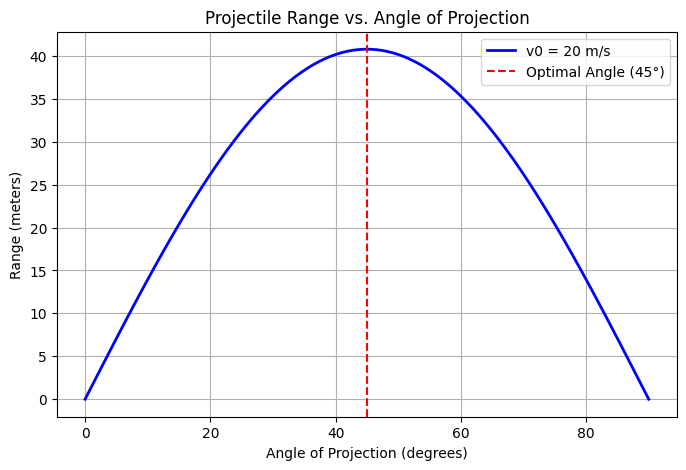
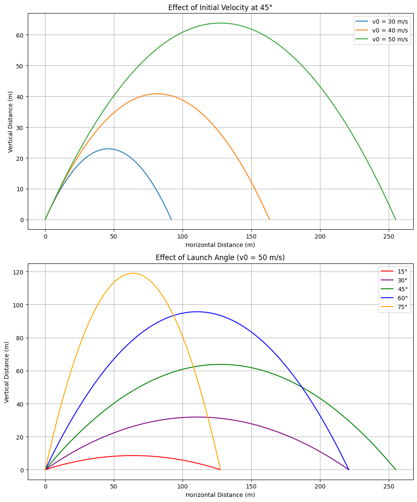
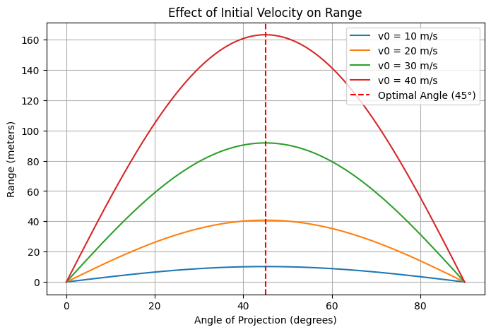

Theoretical Foundation
Governing Equations of Motion
To analyze the range of a projectile as a function of its angle of projection, we begin with Newton's second law and apply it to motion in two dimensions, under the influence of gravity and assuming no air resistance.
Let: - \(v_0\) be the initial velocity, - \(\theta\) be the angle of projection with respect to the horizontal, - \(g\) be the acceleration due to gravity, - \(x(t)\) and \(y(t)\) be the horizontal and vertical positions as functions of time.
1. Horizontal Motion (x-direction)
There is no acceleration in the horizontal direction:
2. Vertical Motion (y-direction)
The only acceleration is due to gravity:
Time of Flight and Range
To find the range \(R\), we determine the total time of flight by setting \(y(t) = 0\) (assuming launch and landing at the same height):
Solving for \(t \neq 0\):
Now, substitute into \(x(t)\) to get the range \(R\):
Influence of Initial Conditions
This equation illustrates that: - The initial speed \(v_0\) increases the range quadratically. - The angle \(\theta\) affects the range via the \(\sin(2\theta)\) function, with a maximum at \(\theta = 45^\circ\). - The gravitational acceleration \(g\) inversely affects the range.
Different combinations of these parameters produce a family of trajectories, all governed by the same set of physical laws. The sensitivity to initial conditions makes projectile motion a powerful model for understanding both ideal and real-world scenarios.
Analysis of the Range
Horizontal Range and Angle of Projection
The horizontal range \(R\) of a projectile is the horizontal distance it travels before returning to the same vertical level from which it was launched (i.e., when \(y = y_0\)).
For a projectile launched from ground level (\(y_0 = 0\)), the total time of flight \(T\) is given by:
The horizontal range is then:
Simplifying:
This formula shows a clear dependency on the angle of projection:
- The range is maximum when \(\sin(2\theta) = 1\), which occurs at \(2\theta = 90^\circ \Rightarrow \theta = 45^\circ\).
- The function \(\sin(2\theta)\) is symmetric about \(\theta = 45^\circ\), meaning:
- \(R(30^\circ) = R(60^\circ)\)
- \(R(10^\circ) = R(80^\circ)\), etc.
Influence of Other Parameters
1. Initial Velocity \(v_0\)
From the range equation:
- The range increases quadratically with \(v_0\).
- Doubling the velocity quadruples the range.
- Higher velocity = longer flight time and faster horizontal travel.
2. Gravitational Acceleration \(g\)
- The range is inversely proportional to \(g\).
- On planets with weaker gravity (e.g., the Moon), the same projectile would travel much farther.
- Example:
- On Earth: \(g \approx 9.8\, \text{m/s}^2\)
- On Moon: \(g \approx 1.6\, \text{m/s}^2 \Rightarrow R_{\text{moon}} \approx 6.1 \times R_{\text{earth}}\)
Summary
- The range depends on the angle of projection via the term \(\sin(2\theta)\).
- It is maximum at 45° and symmetric around it.
- Increasing initial velocity extends range significantly.
- Decreasing gravity also increases range.
These insights show how adjusting launch conditions can precisely control the motion of a projectile — a principle used in everything from sports to space travel.
 Figure 1: Range as a function of projection angle. Maximum range is achieved at 45°.
 Figure 2: Motion trajectories for different launch angles (15°, 30°, 45°, 60°, 75°)
Practical Applications
Adapting the Model for Real-World Situations
While the ideal projectile motion model assumes flat terrain and no air resistance, real-world scenarios often deviate from these assumptions. Let's explore how the basic model can be adapted to accommodate more complex conditions.
1. Uneven Terrain
In real life, projectiles rarely land on the same level from which they were launched. This is particularly relevant in applications like:
- Artillery fired into valleys or onto hills
- Sports like golf or skiing
- Spacecraft landings on planetary surfaces
Adjusting for Launch and Landing Height Difference
If the projectile is launched from height \(y_0\) and lands at a different height \(y = h\), we solve for the time of flight \(t\) using:
This is a quadratic equation in \(t\):
Solving this gives a new time of flight, which can then be used in:
Thus, the range now depends on both launch and landing heights.
2. Air Resistance
Air resistance (drag) significantly affects projectile motion, especially at high speeds or over long distances.
Key Effects of Air Resistance:
- Reduces the range and maximum height
- Breaks the symmetry of the trajectory
- Makes equations nonlinear and harder to solve analytically
The drag force is typically modeled as:
Incorporating drag leads to differential equations such as:
These often require numerical methods (like Euler or Runge-Kutta) to solve.
Applications where air resistance is critical:
- Ballistics and missile systems
- Sports involving fast projectiles (baseball, tennis)
- Engineering of drones, rockets, and reentry vehicles
3. Other Realistic Factors
- Wind: Adds a directional force component, shifting the trajectory.
- Spin & Magnus Effect: In sports, spinning balls curve due to pressure differentials.
- Planetary Gravity: Varying \(g\) affects motion in space missions or planetary exploration.
- Coriolis Effect: For long-range projectiles on Earth, Earth's rotation causes a noticeable deflection.
Conclusion
By modifying initial assumptions, the basic projectile model can be tailored to handle a wide range of real-world complexities. These adaptations are essential in fields like:
- Military engineering
- Aerospace dynamics
- Sports science
- Robotics and automation
Each modification increases realism at the cost of mathematical simplicity, often requiring computational tools for accurate simulation.
 Figure 3: Effect of initial velocity on range - higher velocities significantly increase the range
 Figure 4: Effect of gravity on range - weaker gravity allows for longer travel distances
Figure 4: Effect of gravity on range - weaker gravity allows for longer travel distances